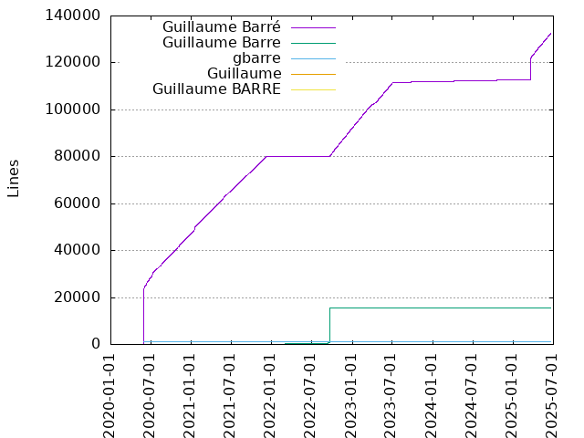
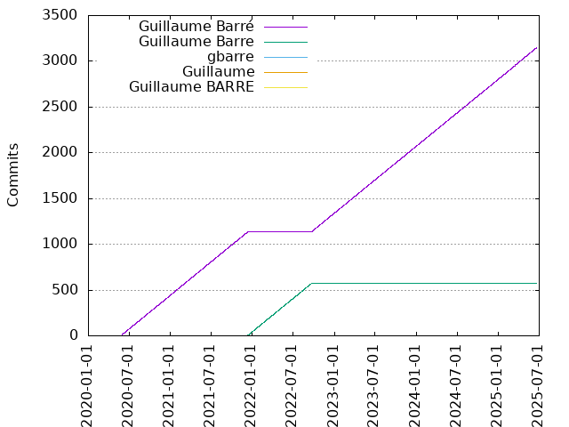

Authors
| Author | Commits (%) | + lines | - lines | First commit | Last commit | Age | Active days | # by commits |
|---|
| Guillaume Barré | 999 (99.50%) | 74185 | 51731 | 2020-05-29 | 2021-10-04 | 492 days, 6:04:32 | 494 | 1 |
| gbarre | 2 (0.20%) | 1025 | 0 | 2020-05-29 | 2020-05-29 | 1:06:45 | 1 | 2 |
| Guillaume | 2 (0.20%) | 78 | 47 | 2020-05-30 | 2020-05-30 | 0:00:45 | 1 | 3 |
| Guillaume BARRE | 1 (0.10%) | 1 | 23 | 2021-01-16 | 2021-01-16 | 0:00:00 | 1 | 4 |


| Month | Author | Commits (%) | Next top 5 | Number of authors |
|---|
| 2021-10 | Guillaume Barré | 7 (100.00% of 7) | | 1 |
| 2021-09 | Guillaume Barré | 60 (100.00% of 60) | | 1 |
| 2021-08 | Guillaume Barré | 62 (100.00% of 62) | | 1 |
| 2021-07 | Guillaume Barré | 62 (100.00% of 62) | | 1 |
| 2021-06 | Guillaume Barré | 60 (100.00% of 60) | | 1 |
| 2021-05 | Guillaume Barré | 63 (100.00% of 63) | | 1 |
| 2021-04 | Guillaume Barré | 60 (100.00% of 60) | | 1 |
| 2021-03 | Guillaume Barré | 62 (100.00% of 62) | | 1 |
| 2021-02 | Guillaume Barré | 56 (100.00% of 56) | | 1 |
| 2021-01 | Guillaume Barré | 64 (98.46% of 65) | Guillaume BARRE | 2 |
| 2020-12 | Guillaume Barré | 62 (100.00% of 62) | | 1 |
| 2020-11 | Guillaume Barré | 60 (100.00% of 60) | | 1 |
| 2020-10 | Guillaume Barré | 62 (100.00% of 62) | | 1 |
| 2020-09 | Guillaume Barré | 60 (100.00% of 60) | | 1 |
| 2020-08 | Guillaume Barré | 62 (100.00% of 62) | | 1 |
| 2020-07 | Guillaume Barré | 62 (100.00% of 62) | | 1 |
| 2020-06 | Guillaume Barré | 61 (100.00% of 61) | | 1 |
| 2020-05 | Guillaume Barré | 14 (77.78% of 18) | gbarre, Guillaume | 3 |
| Year | Author | Commits (%) | Next top 5 | Number of authors |
|---|
| 2021 | Guillaume Barré | 556 (99.82% of 557) | Guillaume BARRE | 2 |
| 2020 | Guillaume Barré | 443 (99.11% of 447) | gbarre, Guillaume | 3 |
| Domains | Total (%) |
|---|
| ac-versailles.fr | 999 (99.50%) |
|---|
| users.noreply.github.com | 2 (0.20%) |
|---|
| sd-136371.dedibox.fr | 2 (0.20%) |
|---|
| sd-66592.dedibox.fr | 1 (0.10%) |
|---|